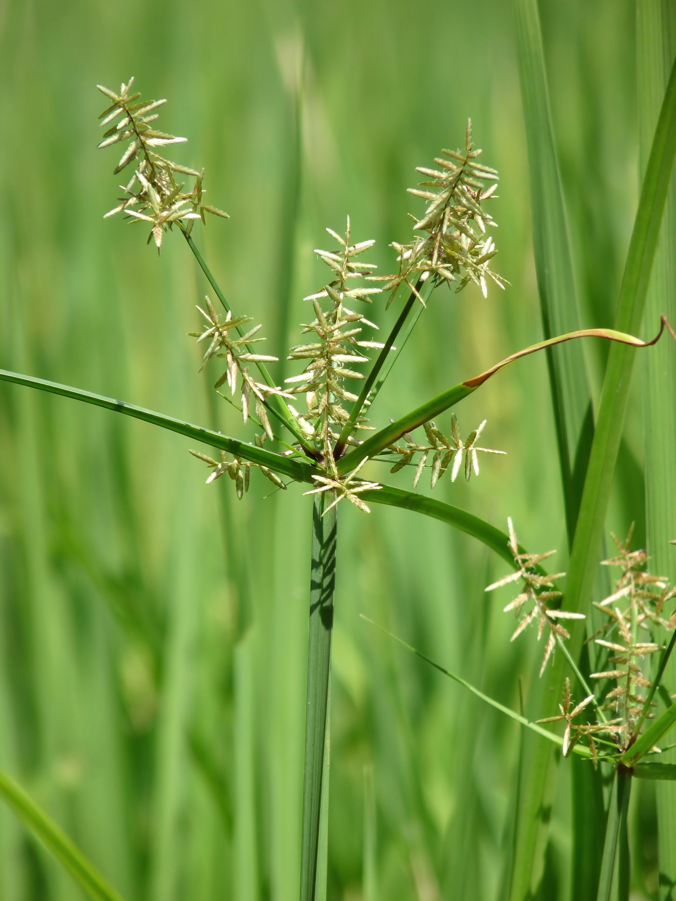

Latthe Education Society's Acharya Deshabhushan Ayurvedic Medical College And Hospital Bedkihal-Shamanewadi, 591214
Department of Dravyaguna Vigyana

Basonym of Drug
Musta
Main Synonym
Varidanamaka
Kuruvinda
Krodakaseruka
Bhadramusta
Gundra
Nagarmustaka
Megha
Abdha
Regional Name
Bengali: Mutha
Gujarati: Motha
Hindi: Motha
Kannada: Koranari
Tamil: Korai Kilangu
Telugu: Tungamuste
Marathi: Motha
Botanical Name
Cyperus rotundus Linn
Family
Cyperaceae
External Morphology
A small perennial herb
Useful Parts
Tubers
Important Phytoconstituent
Cineol
Cyperolone
Isopatchoulenone
Epoxyguaiene
Beta-sitosterol
Kobusone
Rasa Panchak
Rasa: Tikta, Katu, Kashaya
Guna: Laghu, Ruksha
Virya: Sheeta
Vipaka: Katu
Action
Kaphapittahara
Therapeutic Indication
Deepan (Increase appetite)
Grahi (Reduce excessive secretions)
Pachana (Digestive)
Kasahara (Anti-cough)
Krimighna (Anti-helminthic)
Jwarahara (Anti-pyretic)
Therapeutic Uses
Raktapitta:
Root powder with water is beneficial in abdominal pain.
Jwara:
Fresh tuber with Aardrak Swarasa and Madhu is beneficial in fever.
Vishuchika:
Cold infusion is useful to treat diarrhea and vomiting.
Dose
Powder - 3-6 gm
Formulations
Mustadi Vati
Balachaturbhadra Churna
Mustadi Vati
Gangadhar Churna
Mustadi Kwath
Mustakadi Churna
Mustarista
Adverse Effect
Not Known